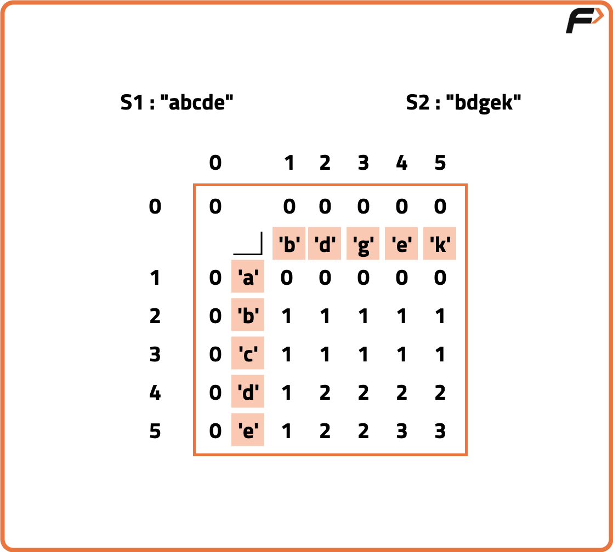
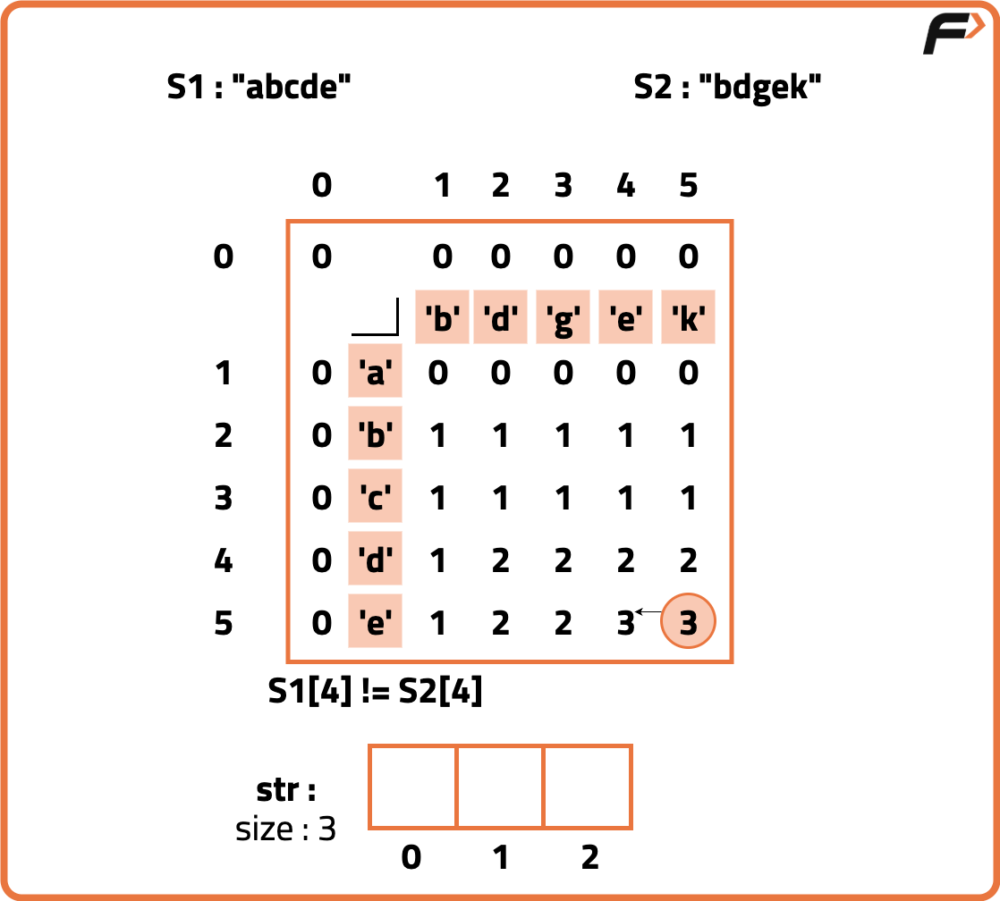
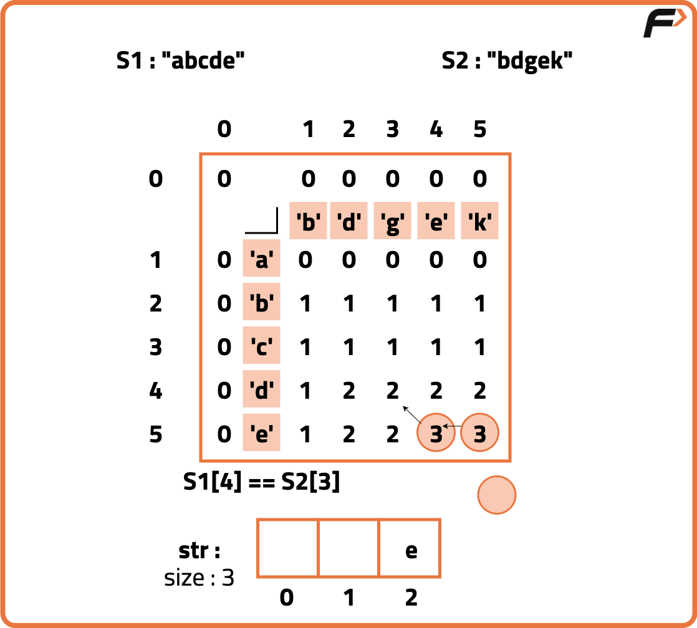
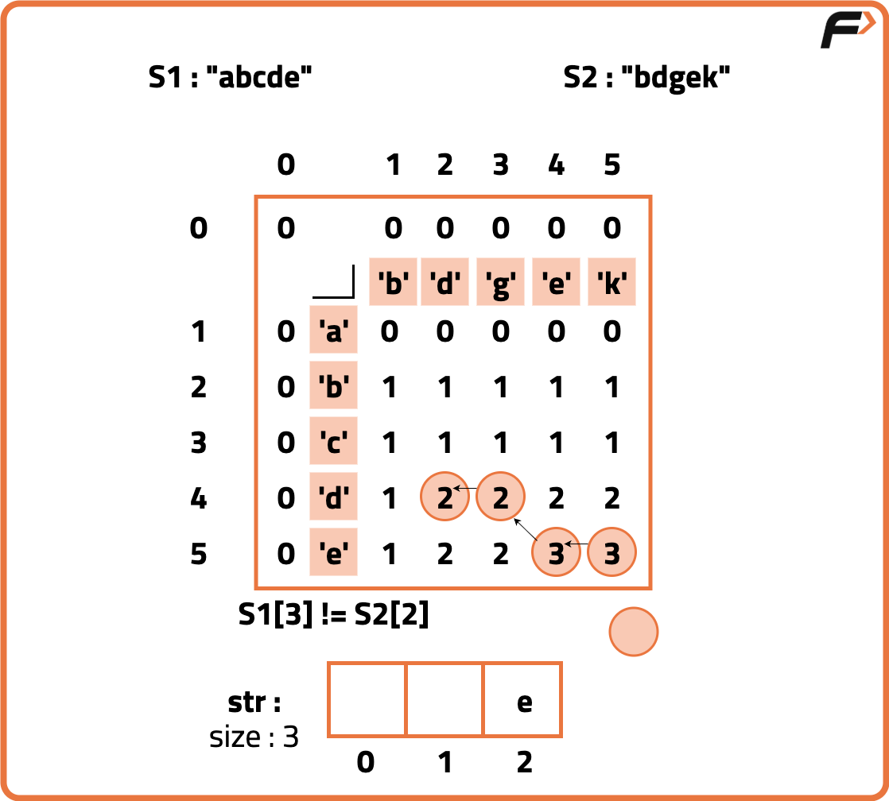
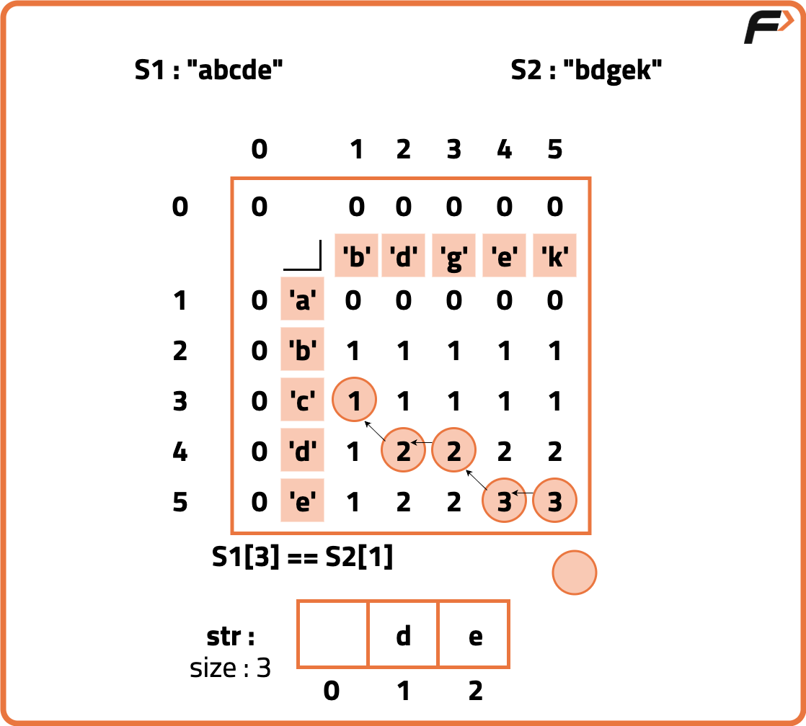
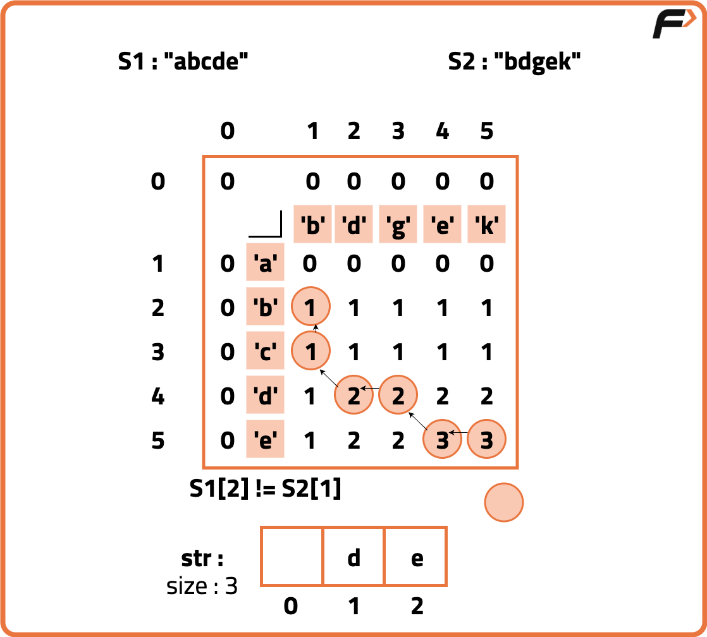
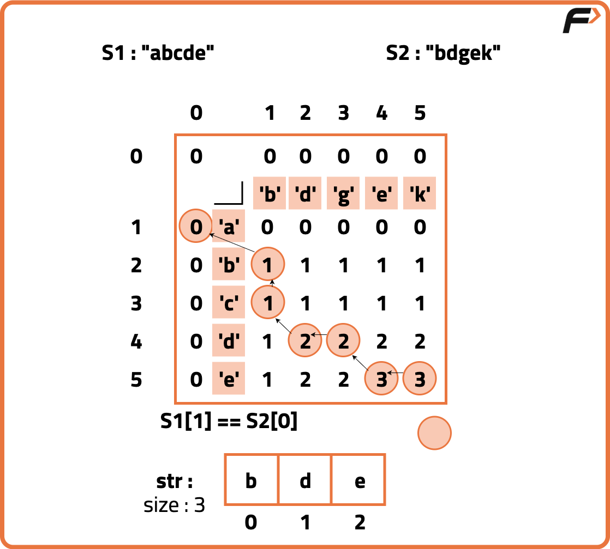

Print Longest Common Subsequence | (DP - 26)
Problem Description: Given two strings str1 and str2, print the longest common subsequence of the two strings.
A subsequence of a string is a list of characters of the string where zero or more characters are deleted and they should be in the same order in the subsequence as in the original string.
Pre-requisite: Longest Common Subsequence
Examples
Input: str1 = "abcd", str2="bdef" Output: "bd" Explanation: LCS of two strings is "bd". Input: str1 = "apple" str2 = "waffle" Output: "ale" Explanation: LCS of two strings is "ale".
Disclaimer: Here is the practice link to help you assess your knowledge better. It's highly recommend trying to solve it before looking at the solution.
Approach
Algorithm
To find the Longest Common Subsequence of two strings, we need to have the 2D DP table where each cell at position (i, j) stores the length of the LCS between the prefixes of the two strings up to indices i and j.
To make this 2D DP table we can follow any of the approach that we learned while finding the length of the Longest Common Subsequence.Continue this process until you reach the top row or leftmost column (i == 0 or j==0).
Reverse the collected characters since the reconstruction starts from the end.
The reversed string is the actual LCS between the two strings.
To make this 2D DP table we can follow any of the approach that we learned while finding the length of the Longest Common Subsequence.
- Once the DP table is completely filled, start from the bottom-right corner (n,m) of the table, where n and m are the lengths of the two strings.
- Compare the characters of the two strings at positions i-1 and j-1:
- If they match, this character is part of the LCS. Add this character to the LCS string (building it backwards) and move diagonally up-left i-1, j-1) in the DP table.
- If they do not match, move in the direction of the larger DP value between dp[i-1][j] and dp[i][j-1]. This step helps trace the path of the optimal solution:
- If dp[i-1][j] is greater than dp[i][j-1], move up to (i-1, j). Otherwise, move left to i, j-1.







Code
#include <bits/stdc++.h>
using namespace std;
// Solution class for LCS with reconstruction using tabulation
class Solution {
public:
// Function to return the LCS string of text1 and text2
string longestCommonSubsequence(string &text1, string &text2) {
int n = text1.size();
int m = text2.size();
// Create DP table to store lengths of LCS for all substrings
vector<vector<int>> dp(n + 1, vector<int>(m + 1, 0));
// Fill dp table bottom-up
for (int i = 1; i <= n; i++) {
for (int j = 1; j <= m; j++) {
if (text1[i - 1] == text2[j - 1]) {
// Characters match: increase length by 1
dp[i][j] = 1 + dp[i - 1][j - 1];
} else {
// Characters don't match: take max of left and top
dp[i][j] = max(dp[i - 1][j], dp[i][j - 1]);
}
}
}
// Reconstruct LCS string from dp table
int i = n, j = m;
string lcs = "";
// Traverse dp table from bottom-right to top-left
while (i > 0 && j > 0) {
if (text1[i - 1] == text2[j - 1]) {
// Characters match, add to result and move diagonally
lcs += text1[i - 1];
i--;
j--;
} else if (dp[i - 1][j] > dp[i][j - 1]) {
// Move up if top cell has greater value
i--;
} else {
// Move left otherwise
j--;
}
}
// Reverse string since it was built backwards
reverse(lcs.begin(), lcs.end());
return lcs;
}
};
int main() {
string s1 = "abcde";
string s2 = "ace";
Solution sol;
cout << "LCS: " << sol.longestCommonSubsequence(s1, s2) << endl;
return 0;
}
Complexity Analysis
Time Complexity: O(N*M) + O(N+M), we first build the entire DP table and then traverse it to reconstruct the LCS.Space Complexity: O(N*M), space used to store DP table.